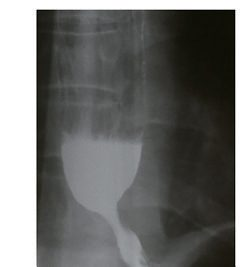
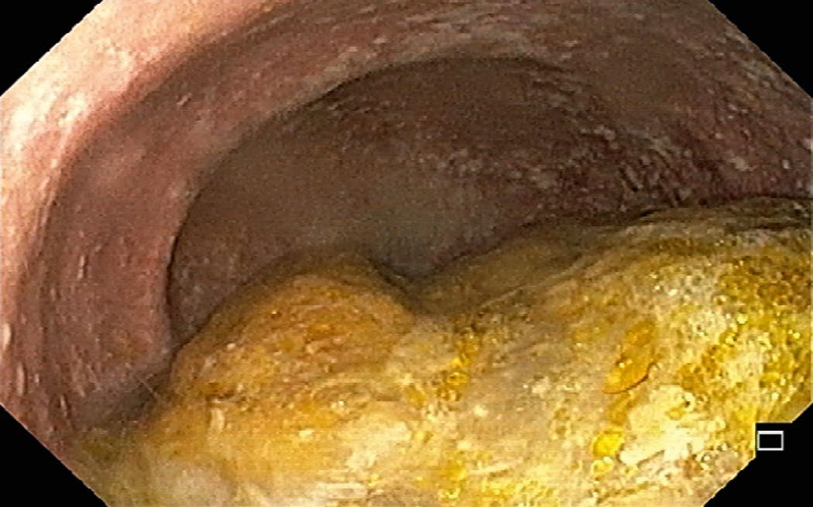
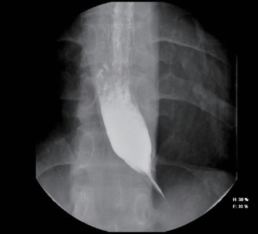
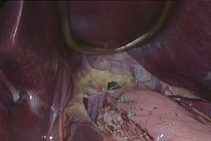
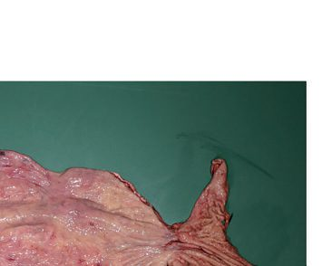
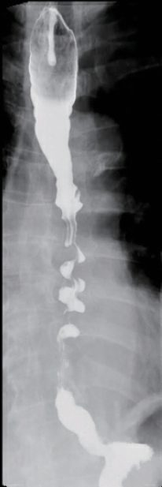

Achalasia
Summary
- Achalasia (from the Greek "khalasis," meaning failure to relax) is the most common oesophageal motility disorder, characterised by absent oesophageal peristalsis and failure of the lower oesophageal sphincter (LES) to relax with swallowing [1].
- It is a rare disease, with an incidence of roughly 1 per 100,000 individuals and a prevalence of 1.8–12.6 per 100,000 per year, affecting men and women equally, with a mean age at diagnosis around 50 years and peaks around 30 and 60 years [1][2].
- Because it is a chronic disease, prevalence accumulates to an estimated 9–10 per 100,000, and neither sex nor race appears to influence incidence [3].
- Treatment is palliative rather than curative, as no therapy reverses the underlying neuronal degeneration [1].
- There is no NICE clinical guideline on achalasia.
- The relevant UK guidance is the British Society of Gastroenterology's national guideline on oesophageal dilatation, which sets out how pneumatic dilatation should be delivered and by whom [4].
- NICE assessed peroral endoscopic myotomy for achalasia through its interventional procedures topic-prioritisation process and decided on 1 March 2024 not to develop guidance, on the grounds that it is an established procedure [5].
Definition
Achalasia is defined manometrically as absent esophageal peristalsis together with impaired relaxation of the LES (incomplete or absent relaxation), and is classified into three subtypes by the Chicago classification based on the pattern of esophageal pressurization: Type I (incomplete LES relaxation, aperistalsis, no esophageal pressurization), Type II (incomplete LES relaxation, aperistalsis, panesophageal pressurization in ≥20% of swallows), and Type III (incomplete LES relaxation, aperistalsis, spastic contractions in ≥20% of swallows) [2].
Pathophysiology
- Achalasia results from selective degeneration of inhibitory neurons of the esophageal myenteric (Auerbach's) plexus that contain nitric oxide and vasoactive intestinal polypeptide, which are required for peristalsis of the esophageal body and relaxation of the LES; excitatory (acetylcholine-containing) neurons are spared, so the LES fails to relax properly and is often hypertensive [2].
- Histology shows a reduced number of ganglion cells with variable chronic inflammation, postulated to result from a virus-induced autoimmune effect [1].
- Autoimmunity is the leading proposed mechanism, with infectious and genetic causes also implicated [6].
- Most researchers regard the process as autoimmune, supported by the finding that the ganglion cells which remain are often surrounded by lymphocytes and eosinophils [3].
- The mismatch between excitatory and inhibitory neural activity causes failure of LES relaxation and absent peristalsis; over time the esophagus dilates, contractions disappear, and emptying occurs mainly by hydrostatic pressure, nearly always incompletely, leading to a progressively tortuous, dilated "megaoesophagus" [1].
Upper oesophageal sphincter dysfunction
Some patients also have dysfunction of the upper oesophageal sphincter and difficulty belching: normally, gas entering the oesophagus from the stomach triggers upper sphincter relaxation, but in achalasia this reflex may be lost, presumably through the same loss of inhibitory neurons, a likely contributor to the oesophageal distension seen in chronic disease [3].
Malignant transformation and secondary causes
- Persistent retention oesophagitis from fermenting food residue may predispose to oesophageal carcinoma [1], the late risk being squamous cell carcinoma [6].
- Secondary forms include Chagas disease, caused by Trypanosoma cruzi infection (destroys the myenteric plexus, with effects on the heart, brain, and GI tract as well), and pseudoachalasia caused by malignancy (especially cancer of the esophagus or gastric cardia), which should be excluded in older patients (>60 years) with short symptom duration and significant weight loss [1][2].
- Systemic sclerosis is a further motility mimic to exclude: it also causes poor oesophageal motility, but this leads to failure of acid clearance and reflux-related stricture, rather than achalasia's failure of LES relaxation [7].
- Achalasia is also part of Allgrove (triple A) syndrome, achalasia, alacrimia, and adrenal insufficiency [1][2].

Clinical features
- Achalasia has an insidious onset with gradual progression, most commonly dysphagia progressing from solids to liquids, and patients often go years before seeking medical attention, frequently being treated for other diseases such as gastro-oesophageal reflux first [3].
- Dysphagia for both solids and liquids is the most common symptom, present in approximately 95% of patients [2]; the Oxford Handbook notes initial dysphagia may be worse for liquids than solids as disease progresses [8].
- This oesophageal-body pattern, food sticking after the swallow has been initiated, is distinct from oropharyngeal dysphagia, in which conditions such as myasthenia gravis, multiple sclerosis, and cerebrovascular disease cause immediate difficulty initiating the swallow [7].
| Symptom | Frequency |
|---|---|
| Dysphagia to solids | 91% |
| Dysphagia to liquids | 85% |
| Regurgitation of food and saliva | 45–75% |
| Sore throat, hoarseness or postnasal drip | Up to 71% |
| Cough | 61% |
Table reproduces the reported symptom rates above [3]. Regurgitation of undigested food occurs in about 70% of patients and can cause aspiration with cough, hoarseness, and recurrent pneumonia [2]. Respiratory symptoms are attributed to chronic aspiration from failed oesophageal clearance, and most patients reporting them have had dysphagia for two or more years beforehand [3].
The reflux pitfall
- Heartburn occurs in 40–50% of patients but is due to stasis and fermentation of undigested food rather than true acid reflux; when misattributed to GERD, patients may be treated with acid-reducing medication or even referred for antireflux surgery, delaying correct diagnosis ("refractory GERD" pitfall) [1][2].
- Chest pain occurs in 40–50% of patients, thought to be secondary to esophageal distention [2].
- Weight loss may or may not occur, as patients often adjust their diet [1].
- Aspiration-related respiratory symptoms, halitosis from fermenting retained food, and regurgitation of previously ingested food are also reported [1].
Effect of patient demographics
Younger patients present with chest pain and heartburn more often than older patients, who tend to be less symptomatic overall; obese patients with a BMI of 30 kg/m² or more experience choking and vomiting more frequently before myotomy than non-obese patients [3].
Etiology
- The exact etiology of the degenerative process remains unknown; some viruses (varicella-zoster, human papilloma, herpes) have been implicated in triggering an inflammatory/autoimmune reaction [2].
- There is increasing evidence for a genetic contribution, drawn from twin and sibling studies and from the association of achalasia with Parkinson disease and Down syndrome, although genetic testing remains largely a research tool with limited diagnostic utility [3].
- Secondary causes include Chagas disease (Trypanosoma cruzi) and pseudoachalasia from malignancy; Allgrove syndrome is a rare genetic cause [1][2].
Diagnosis
Endoscopy
- Patients presenting with dysphagia are often trialled on a proton pump inhibitor first, which is appropriate, but failure to improve after 4 to 6 weeks warrants further evaluation, the next step being upper endoscopy with mucosal biopsy to exclude an inflammatory ring, erosive reflux, eosinophilic oesophagitis, and oesophageal cancer [3].
- Esophagogastroduodenoscopy is normal in about 40% of patients (30–40% per Bailey & Love); it may show retained food/saliva or stasis/Candida esophagitis, and is essential to exclude pseudoachalasia from malignancy [1][2][6].
- Other endoscopic findings include a dilated tortuous oesophagus, residual food and fluid, and difficulty passing the scope through the LES [3].

Contrast studies
Barium swallow shows distal esophageal narrowing with a "bird's beak" or "rat's tail" tapering, an air-fluid level, slow emptying, tertiary contractions, and, with progression, a dilated tortuous "sigmoid" esophagus; a timed barium oesophagogram quantifies contrast retention height to assess severity [1][2]. These findings are suggestive but insufficient for definitive diagnosis, which requires manometry [3].


High-resolution manometry
- High-resolution esophageal manometry is the gold standard, establishing the diagnosis and classifying the achalasia subtype (I, II, or III), which has important treatment implications [1][2].
- High-resolution catheters carry sensors every 1 cm along their length, against every 3 to 5 cm in traditional water-perfused and strain-gauge systems, producing an oesophageal pressure topography that plots pressure on a colour scale against time and location [3].
- Manometry classically shows high/normal basal LES pressure with incomplete LES relaxation and poor or absent peristalsis [6][8].
- In normal individuals the LES relaxes completely during a swallow, to below 8 mmHg above gastric pressure; in achalasia relaxation is incomplete or absent, and additional findings are a resting LES pressure above 45 mmHg and aperistalsis in the distal two-thirds of the oesophagus [3].
- Incomplete LES relaxation is what distinguishes achalasia from other disorders associated with aperistalsis [3].
Adjunctive tests
- Ambulatory pH monitoring is recommended for patients with heartburn to distinguish achalasia from GERD; one study found 29% of patients eventually diagnosed with achalasia had been treated for an average of 29 months with PPIs beforehand [2].
- Functional lumen imaging probe (FLIP) is a newer complementary test assessing esophageal compliance and distensibility [2].
- Where the diagnosis remains unclear after endoscopy, barium oesophagram and manometry, endoscopic ultrasound of the LES or a timed barium oesophagram documenting contrast retention may help [3].
Scoring and Severity
- The Eckardt score is a clinical scoring system used to assess achalasia severity and monitor treatment response, assigning 0–3 points each to four symptoms (dysphagia, regurgitation, weight loss, and chest/retrosternal pain) for a total range of 0–12; a score of ≤3 indicates successful treatment [1][2].
- The Chicago classification subdivides achalasia into Types I, II, and III based on high-resolution manometry pressurization patterns, which guides treatment choice and predicts outcome [1][2].
- The measurement that places a patient in that group is the integrated relaxation pressure (IRP), the relaxation pressure across the oesophagogastric junction in response to a swallow.
- An elevated IRP defines the disorders of OGJ outflow, which comprise the three types of achalasia and OGJ outflow obstruction (OGJOO), and separates them from the disorders of peristalsis, absent contractility, distal oesophageal spasm, and hypercontractile oesophagus [1].

| Chicago type | Manometric pattern | Response to botulinum toxin | Response to pneumatic dilation | Response to Heller myotomy | Overall response |
|---|---|---|---|---|---|
| I (classic) | Impaired LES relaxation, absent peristalsis, normal oesophageal pressure | — | — | — | 56% |
| II | Impaired LES relaxation, absent peristalsis, increased panoesophageal pressure | 71% | 91% | 100% | Best of the three |
| III (spastic) | Impaired LES relaxation, absent peristalsis, distal oesophageal spastic contractions | — | — | — | 29% |
Type II patients are significantly more likely to respond to any therapy than type I or type III patients, which has improved the ability to discuss expected outcomes with patients [3].
Treatment and Management
Treatment is palliative, aiming to reduce the functional obstruction from the nonrelaxing, often hypertensive LES; the goal is early diagnosis and therapy to prevent late complications while preserving oesophageal function [2][3].
Medical therapy
- Pharmacologic therapy (calcium channel blockers such as nifedipine, phosphodiesterase-5 inhibitors such as sildenafil, nitrates) has limited efficacy and notable side effects (headache, oedema, hypotension), and is reserved for patients who are poor candidates for endoscopic or surgical treatment [1][2].
- It is the least invasive but least effective option: initial response is approximately 50%, and long-term success is limited by side effects including headache, orthostatic hypotension and oedema [3].
- Oral calcium channel blockers or nitrates can relax the LES in 47% to 64% of patients, the two most widely used agents being nifedipine 10–30 mg given 30–45 minutes before meals and isosorbide dinitrate 5–10 mg given 10–15 minutes before meals, with some evidence that isosorbide dinitrate acts more rapidly [3].
Botulinum toxin
Endoscopic botulinum toxin injection into the LES gives symptom relief in about 70–80% of patients at 1–3 months, falling to roughly 40% at 12 months, and is generally reserved for elderly/comorbid patients unsuitable for myotomy or dilatation, since repeated injections can cause scarring that complicates subsequent surgery [1][2]. It works by blocking the excitatory acetylcholine-releasing neurons that raise LES smooth muscle tone, so resting LES pressure falls and the oesophagus empties; initial improvement approaches 70%, comparable with pneumatic dilation, but symptoms recur in as little as 6 months [3].
Pneumatic dilatation
- Pneumatic dilatation uses a graded approach starting with a 30 mm balloon, reserving 35 mm and 40 mm balloons for persistent/recurrent symptoms; it is effective in roughly 80% of patients but with higher retreatment rates than surgery, and predictors of poor response include age <40, male sex, large esophageal diameter, and Chicago type I/III [2][6].
- A non-compliant cylindrical balloon tears the muscle fibres of the LES; commercially available balloons come in three sizes (3.0, 3.5 and 4.0 cm), against a largest through-the-scope balloon of 2.0 cm, and the balloon is insufflated with a hand-held pressure gauge for 15 to 60 seconds [3].
- Short-term success ranges from 60% to 90% and is generally sustained for up to 2 years, but nearly one-third of patients go on to require additional therapy; despite this, pneumatic dilatation is considered the most cost-effective treatment for achalasia [3].
- Success is influenced by age (better if over 45), sex (better in females), oesophageal diameter and achalasia subtype [3].
- Perforation risk with a 30 mm balloon is under 0.5%, rising with larger balloons; overall reported perforation incidence averages about 1.9% [1].
- Because of the risk of oesophageal rupture, patients should be considered appropriate surgical candidates before dilatation and surgical backup should be readily available [3].
The BSG national guideline sets the UK technique for pneumatic dilatation, and notes that bougie dilators are not used for achalasia [4].
![The BSG graded pneumatic dilatation protocol for achalasia. Session 1: start with a 30 mm pneumatic balloon, balloons range 30–40 mm, and starting at 30 mm reduces the risk of complications; bougie dilators are not used for achalasia (BSG 1.1). Session 2: a second dilatation 2 to 28 days later with a larger balloon, usually 35 mm (BSG 1.2). Session 3: cautious use of a 40 mm balloon if the Eckardt score remains above 3; if it is still above 3 after this session the treatment is considered to have failed. Follow-up: consider repeat dilatation after the initial series to maintain symptom response (BSG 1.3). Guidance: perform under endoscopic or fluoroscopic control according to clinician preference and local expertise, fluoroscopy is not mandatory (BSG 1.4). Aftercare: consider PPI therapy afterwards, since the technique carries a 10–40% rate of symptomatic reflux or ulcerative oesophagitis (BSG 1.5). Safety: a water-soluble contrast swallow to screen for perforation may be considered but is not essential, the only weak recommendation of the six, the rest being strong (BSG 1.6)](../assets/infographics/achalasia-uk-dilatation.webp)
| Recommendation | GRADE evidence | Strength |
|---|---|---|
| 1.1 Perform dilatation with pneumatic balloons 30–40 mm in diameter, starting at 30 mm in the first session to reduce the risk of complications | High | Strong |
| 1.2 Perform a second dilatation session 2–28 days later with a larger balloon of 35 mm | High | Strong |
| 1.3 Consider repeat dilatation after the initial series during follow-up to maintain symptom response | High | Strong |
| 1.4 Perform dilatation under endoscopic or fluoroscopic control based on clinician preference and local expertise | Moderate | Strong |
| 1.5 Consider PPI therapy after dilatation, as the technique carries a 10–40% rate of symptomatic GORD or ulcerative oesophagitis | High | Strong |
| 1.6 Consider a water-soluble contrast swallow after dilatation to screen for perforation, but it is not essential | Moderate | Weak |
- Table reproduces recommendations 1.1 to 1.6 [4].
- Most authors advocate a third session, either routinely or where symptoms persist with an Eckardt score above 3, using a 40 mm balloon cautiously; if the Eckardt score remains above 3 after the third session the treatment is usually considered to have failed [4].
- The procedure is effective in 90% of patients in the first year, falling to 86% in the second, and up to a third relapse over 4 to 6 years, but the vast majority can be treated successfully by repeat dilatation, achieving remission in up to 97% at 5 years and 93% at 10 years [4].
Patients should fast at least 6 hours before dilatation, and those with achalasia are likely to have oesophageal stasis and so require a longer fast based on clinical judgement [4]. Dilatation should not be performed in active or incompletely healed oesophageal perforation, and requires careful weighing of benefit and risk after a recent healed perforation, recent upper gastrointestinal surgery, pharyngeal or cervical deformity, or bleeding disorders [4].
Comparative efficacy
A European RCT (PD vs. laparoscopic Heller myotomy with Dor fundoplication) found similar therapeutic success at 2 years (86% vs. 90%) and 5 years (82% vs. 84%), though 25% of PD patients needed additional dilatations [2]. Early studies suggested surgical myotomy gave better long-term symptom improvement than dilatation (68.2% versus 56.3%), but those patients underwent only a single dilatation, which is not current practice; in one of the most referenced randomised trials comparing surgical myotomy with graded pneumatic dilatation there was no significant difference at 2 years (92% for dilatation versus 87% for myotomy) [3].
Surgeries
Laparoscopic Heller myotomy
- Laparoscopic Heller myotomy (LHM) with partial fundoplication is now the standard surgical treatment, dividing the circular muscle of the lower esophagus and gastric cardia, typically extending about 6 cm proximally on the esophagus and 2–3 cm distally onto the stomach [1][6].
- The original approach divided the circular and longitudinal muscle fibres through a thoracotomy with good results, but has been replaced by the laparoscopic transabdominal approach because of lower perioperative morbidity and faster recovery [3].
- The procedure uses a standard 4- to 5-port laparoscopic approach: after dividing the gastro-oesophageal ligament, both the outer longitudinal and inner circular fibres are divided by blunt traction or electrocautery for 4 to 6 cm proximally from the gastro-oesophageal junction and 2 cm distally onto the stomach, and the fundoplication then follows [3].

A partial fundoplication (anterior Dor or posterior Toupet) is added to reduce postoperative GERD, which can occur in up to 40–50% of patients after myotomy alone; a complete 360° (Nissen) fundoplication is contraindicated as it causes outflow resistance against an aperistaltic esophageal body, risking dysphagia [1][2][9]. A blinded randomised controlled trial found that adding a fundoplication reduced abnormal oesophageal acid exposure from 47% to 9%, and SAGES accordingly recommends including one after surgical myotomy, though whether an anterior Dor or posterior Toupet is preferable remains uncertain [3].

- The Padua group reported a 90% success rate among 407 LHM patients at 2.5-year median follow-up, with 87% 5-year actuarial probability of remaining asymptomatic; a Swedish RCT versus pneumatic dilatation showed 92% excellent results at 5 years and 80% at 10 years after LHM [2].
- Heller myotomy achieves efficacy of 88% to 95% against single pneumatic dilatation, though this superiority is less evident against serial graded dilatation, and efficacy falls over time from nearly 96% at 6 months to 57–92% at 6 years [3].
- Surgical outcomes are better for type I and II achalasia than type III, which may need a longer, more proximally extended myotomy [1][2].
Peroral endoscopic myotomy
- Peroral endoscopic myotomy (POEM) is a purely endoscopic myotomy via a submucosal tunnel, extending a minimum of 6 cm proximally and 2 cm onto the gastric cardia, closed with endoclips.
- It achieves symptom relief in >90% of patients, similar to LHM, and is particularly advantageous for type III achalasia because the myotomy length can be tailored [1][2].
- First described in 2010 by Inoue and colleagues, it uses a standard flexible gastroscope with a transparent cap to make a small mucosal cut roughly 14 cm proximal to the gastro-oesophageal junction, enters the submucosal plane, tunnels along the oesophagus and onto the stomach, divides the muscle fibres with electrocautery, and closes the mucosotomy with clips or sutures [3].
- Many series report success rates over 90% at one year, and a meta-analysis against surgical myotomy showed equivalent short-term outcomes with comparable complication rates [3].

Because POEM has no antireflux component, postprocedure GERD is markedly more common than after LHM with fundoplication, pathologic reflux around 47–57% after POEM versus roughly 11–20% after LHM in comparative studies, including a multicenter RCT of 221 patients [1][2]. Reported reflux rates after POEM range from 10% to 46%, and most patients are placed on PPI therapy afterwards until pH testing can be completed [3].
Oesophagectomy
- Esophagectomy is reserved as a last resort for end-stage achalasia with a massively dilated, sigmoid ("megaoesophagus") that has failed other treatments, given the risk of aspiration and regurgitation from a poorly emptying esophagus.
- A 2001 series of 93 esophagectomies reported anastomotic leak in 10%, recurrent laryngeal nerve injury in 5%, and 2 deaths, with 50% developing anastomotic stricture [1][2].
- Pneumatic dilatation is often unsuccessful in these patients, who require surgical myotomy or POEM; where oesophagectomy with gastric pull-up is ultimately needed, uncontrolled studies report symptom improvement in 80% of patients with mortality ranging from 0% to 5.4% [3].

- UK standards for who may perform dilatation and where are set out alongside the technique itself.
- Oesophageal dilatation should be undertaken only by, or under the direct supervision of, an experienced operator performing sufficient numbers to maintain their skills, supported by at least two assistants in the room, one of whom must be a trained nurse [4].
- Trainees must have adequate knowledge of the indications for, contraindications to, and complications of the procedure, understand the steps for recognising and managing complications, and be familiar with different dilatation techniques as well as alternative and complementary treatment options [4].
The procedure should be performed in a dedicated, fully equipped endoscopy room with access to X-ray screening and surgical support, or a similarly equipped radiological suite [4]. Units must have an agreed protocol to follow in the event of a perforation, with clear identification of a qualified surgeon (on site or off) to manage it where luminal treatment such as a covered stent is not feasible or appropriate [4].
Complications
- Complications of pneumatic dilatation include esophageal perforation (roughly 1.9% average incidence, lower with smaller balloons) [1].
- Reported perforation rates range from 0% to 15% in the literature, though recent high-volume centre studies place it at approximately 1% to 5%; no pre-dilatation factors predict perforation, which is most likely due to an inappropriately positioned balloon [3].
- Perforation may be small and clinically insignificant, managed with antibiotics, parenteral nutrition or an oesophageal stent, or a major disruption requiring emergency surgical exploration and repair [3].
- The commonest complication after dilatation is gastro-oesophageal reflux disease, at rates approaching 20%, usually treatable with PPI therapy [3].
- Complications of Heller myotomy include mucosal perforation (increased risk in patients with prior botulinum toxin injection due to loss of normal tissue planes) and postoperative GERD, esophagitis, Barrett esophagus, and even adenocarcinoma with long-term reflux exposure, particularly relevant in younger patients [2].
- Reflux after surgical myotomy without fundoplication approaches 30% [3].
- POEM carries a high incidence of postprocedure reflux/esophagitis (up to 57% at 3 months in some series), potentially requiring lifelong acid suppression or a later antireflux operation [1].
- Recurrent dysphagia after treatment is common, particularly in younger patients, most often due to scarring at the distal myotomy or development of a peptic stricture from reflux; full re-evaluation (barium swallow, endoscopy, manometry, pH monitoring) is needed before further intervention [2].
Malignancy risk
- Long-standing achalasia with chronic retention oesophagitis is associated with an increased risk of oesophageal carcinoma, typically squamous cell carcinoma, occurring late in the disease course [1][6].
- The hazard ratio for developing squamous cell carcinoma is 28 compared with the general population, attributed to stasis and consequent inflammation; the risk of adenocarcinoma is also raised but substantially lower.
- The absolute risk nevertheless remains low, and there are insufficient data to support routine endoscopic surveillance [3].
- Perforation should be suspected when a patient develops pain, breathlessness, fever or tachycardia after dilatation; transient chest pain is not uncommon, but persistent pain should prompt a CT scan with oral contrast [4].
- Patients should be monitored for at least 2 hours in recovery and given clear written instructions on fluids, diet and medications, and should be well and tolerating water on leaving hospital [4].
- Imaging and contrast studies should not be performed routinely after the procedure unless the patient develops persistent chest pain, fever, breathlessness or tachycardia during recovery [4].
- If the patient becomes symptomatic while still in the procedure room, perform endoscopic re-inspection to assess for perforation and to undertake treatment, which may include immediate endoscopic stent placement [4].
- Provide patients with contact information for the on-call team should they experience chest pain, breathlessness or become unwell [4].
Prognosis
- Achalasia cannot be cured, only palliated, since neuronal degeneration is irreversible [1].
- With laparoscopic Heller myotomy, long-term symptom control is excellent, with several series reporting 84–92% success at 5 years and around 80% at 10 years [2].
- POEM and LHM show comparable clinical success rates (roughly 81–93% at 2 years across studies) though POEM carries a substantially higher rate of pathologic reflux [2].
- Considering the rarity and complexity of achalasia, best results are achieved through multidisciplinary evaluation with treatment tailored to the individual patient [2].
Diffuse oesophageal spasm
- Diffuse oesophageal spasm is characterised by uncoordinated, simultaneous contractions of normal amplitude in the distal oesophagus that fail to propel food, presenting with dysphagia, regurgitation and chest pain [3].
- On high-resolution manometry it shows 20% or more premature contractions; unlike achalasia the symptoms are intermittent, findings may be absent on some series of test swallows, and LES relaxation is usually normal [3].
- Contrast oesophagram may show a corkscrew or rosary bead appearance, and among patients undergoing manometry for non-cardiac chest pain the prevalence of diffuse oesophageal spasm was 4% [3].

References
- Bailey & Love's Short Practice of Surgery, 28th ed., Ch. 66, The oesophagus
- Sabiston Textbook of Surgery, 22nd ed., Ch. 83, Benign Esophageal Disorders
- Maingot's Abdominal Operations, 13th ed., Ch. 22, Achalasia and Other Motility Disorders
- British Society of Gastroenterology: UK guidelines on oesophageal dilatation in clinical practice. Gut 2018, 1.1; 1.1, 1.2, 1.3, 1.4, 1.5, 1.6; Achalasia dilatation; 1.1–1.6; 1.2; 1.3; 1.4; 4.1, 4.3; 4.2; 4.4; 4.5; 4.6; Achalasia dilatation; Contraindications; Disease-specific considerations 1.1–1.6; Fasting www.bsg.org.uk
- NICE Interventional Procedures topic prioritisation IP1229: Peroral endoscopic myotomy (POEM) for achalasia — decision not to develop guidance (2024), Decision www.nice.org.uk
- The ABSITE Review, 2022, Ch. Esophagus
- Browse's Introduction to the Symptoms and Signs of Surgical Disease, 6th ed., Ch. 15
- Oxford Handbook of Clinical Surgery, 5th ed., Ch. 8, Upper gastrointestinal surgery
- Schwartz's Principles of Surgery: ABSITE and Board Review, Ch. 25, The Esophagus and Diaphragmatic Hernia